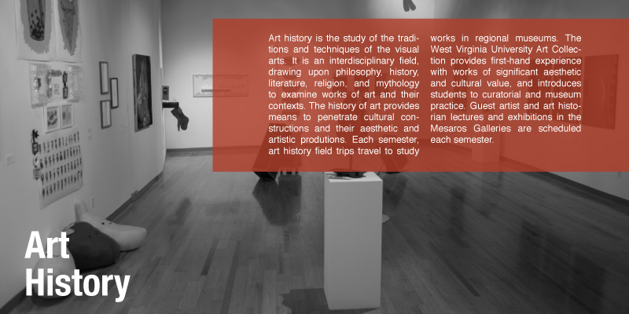

My name is John Nuevo and I'm a Graphic Designer from West Virginia. I currently attend West Virginia University and will be graduating in the spring with my BFA. Since I was young, I've always shown a strong interest in drawing and painting so aesthetics is something I've always been used to.
